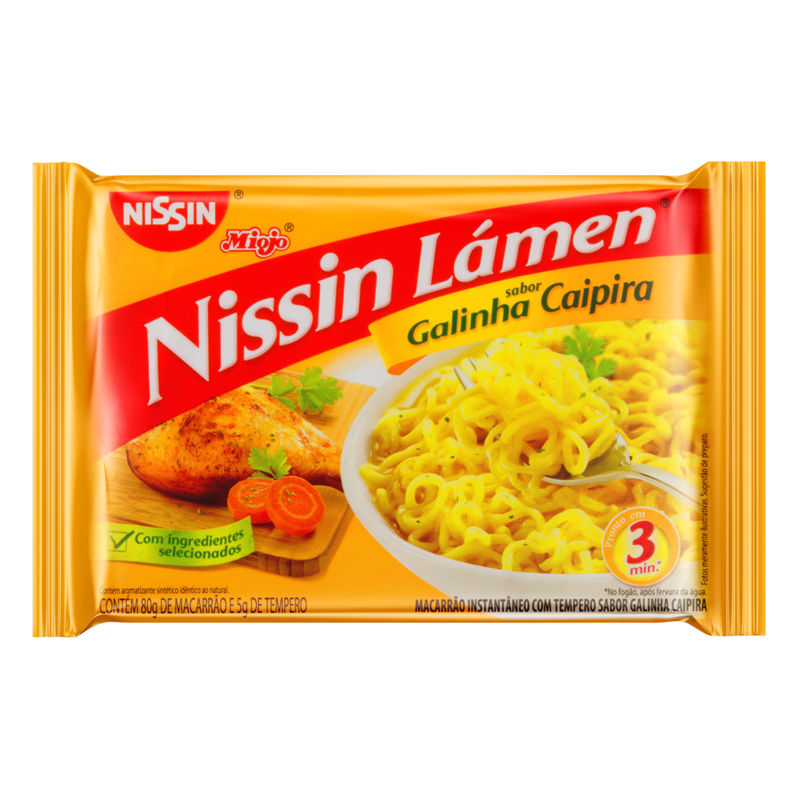

<!DOCTYPE html>
<html lang="en">
<head>
    <meta charset="UTF-8">
    <meta name="viewport" content="width=device-width, initial-scale=1.0">
    <title>Site Teste</title>
    <style>
        .enderco{color:red}
    </style>
</head>
    
</body>
</html>
<body>
<h1>Olá ,como vai você?</h1>
<p>
<h2>Hoje vou ensinar a fazer um miojão</h2>
</p>
<p></p>
<h2 class="enderco" >Primeiro Passo</h2>
<ul>
<h3><li>Esquentar a Água</li></h3>
<li>Use uma panela de bom tamanho para cozinhar o miojo Ela deve ser grande o suficiente para reunir todo o macarrão sem quebrá-lo, e deve ser pequena para que dois copos de água cubram o miojo Coloque dois copos de água na panela. Você pode usar outro tipo de líquido, como molho de soja ou carne, mas água funciona bem Aqueça a água. Ligue o fogão no máximo e espere a água na panela ferver</li>

<li>Cuidado quando a água começar a ferver. As bolhas podem subir e derramar. Portanto, assim que começar a ferver, você pode diminuir o fogo</li>
</ul>

<h2 class="enderco" >Segundo Passo</h2>
<ul>
<h3><li>Cozinhar o Miojo</li></h3>
<li>Espere. O tempo de cozimento comum é de três minutos, mas pode demorar um pouco mais. Quando o macarrão começar a ficar amarelado, estará pronto. Nesse ponto os fios devem estar totalmente separados. Nesse momento, quando você coloca o garfo na água, alguns fios ficam presos nele.</li>
</ul>

<h2 class="enderco" >Terceiro Passo</h2>
<ul>
<li><h3>Servir</h3></li>
<li>O miojo está pronto para comer quando estiver mole. Se cozinhar alguns minutos a mais, ele vai ficar muito mole e pastoso. Talvez você prefira assim Coloque o tempero. Note que existe uma quantidade muito grande de sódio no pacotinho de tempero se você tem problemas de saúde, talvez seja melhor colocar menos, ou nenhum tempero.</li>    <li>Misture bem. Nesse momento você pode fazer duas coisas: colocar todo o conteúdo da panela, incluindo a água no prato, ou retirar a água e comer só o macarrão.</li>
</ul>
<a href="https://www.instagram.com/chiesagustavo/"target="_blank">Instagram Pessoal</a><br>
<a href="https://twitter.com/gustavochiesaa"target="_blank">Twitter Pessoal</a>
    
<p>-Goku<br>
<p style="color: red;">Kaioken</p>
<p style="color: yellow;">SSJ1 SSJ2 SSJ3</p>
<p style="color:red" SSJGod> SSJGod</p>
<p style="color: blue;">SSJGodSSJ SSJGodSSJKaioken</p> 

<p>-Vegeta<br>
<p style="color: yellow;" SSJ1 SSJ2>SSJ1 SSJ2</p>
<p style="color: RED;" SSJGod> SSJGod</p>
<p style="color:blue;" SSJGodSSJ SSJGodSSJEvolution>SSJGodSSJ SSJGodSSJEvolution</p>

<p>-Gohan<br>
<p style="color: yellow;" SSJ1 SSJ2>SSJ1 SSJ2</p>
<P style="color: grey;" PotenciaUnleashed>PotenciaUnleashed</p>

<p>-Trunks(Future)<br>
SSJ1 SSJ2 SSJGodSSJ(Half)</p>

<p>-Trunk(kid)<br>
SSJ1 </p>

<p>-Goten<br>
SSJ1</p>

<p>-Fusions</p>

<p>-Vegitto<br>
SSJ1 SSJ2 SSJGodSSJ</p>

<p>-Gogeta<br>
SSJ1 SSJGodSSJ</p>

<p>-Gotenks<br>
SJ1 SSJ3 </p>
